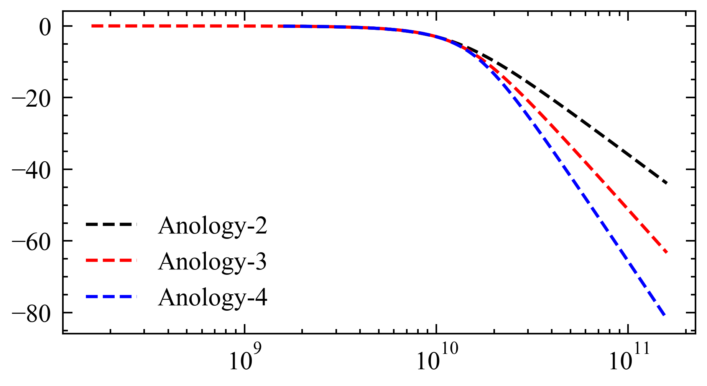

- Bessel Filter
scipy中的Bessel Filter
- 数字滤波器形式
- 模拟滤波器形式
Bessel filter 本身是一个模拟滤波器，如果要求本函数设计的是一个数字滤波器, 他的内部会调用双线性变换法对其进行处理，因此相位响应会被破坏
from ocsim import SignalSetting,QamSignal,PulseShaping,Laser,IdealResampler
from ocsim import filter_signal,Transimitter
from scipy.signal import bessel
from scipy.signal import freqs,sosfreqz
import numpy as np
import matplotlib.pyplot as plt
trans = Transimitter(SignalSetting(center_freq=193.1e12),4,0.2,0)
signal = trans.prop()
with plt.style.context(['science', 'ieee', 'no-latex']):
signal, system = filter_signal(signal, signal.fs, 10e9, analog=True,order=2)
w, h = freqs(system[0], system[1])
plt.semilogx(w/2/np.pi, 20 * np.log10(np.abs(h)), ls='dashed',label='Anology-2')
signal, system = filter_signal(signal, signal.fs, 10e9, analog=True, order=3)
w, h = freqs(system[0], system[1])
plt.semilogx(w / 2 / np.pi, 20 * np.log10(np.abs(h)), ls='dashed', label='Anology-3')
signal, system = filter_signal(signal, signal.fs, 10e9, analog=True,order=4)
w, h = freqs(system[0], system[1])
plt.semilogx(w/2/np.pi, 20 * np.log10(np.abs(h)), ls='dashed',label='Anology-4')
plt.legend()
plt.tight_layout()
plt.show()

上图为在不同的order下，幅频响应曲线,其中截止频率设定为10e9 Hz